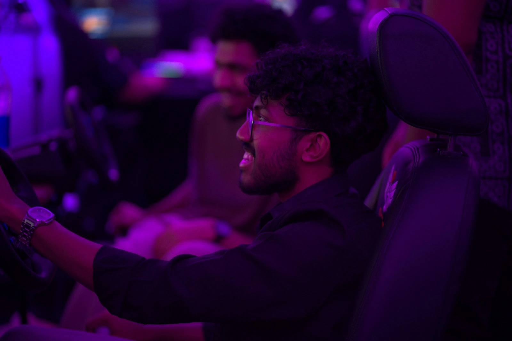
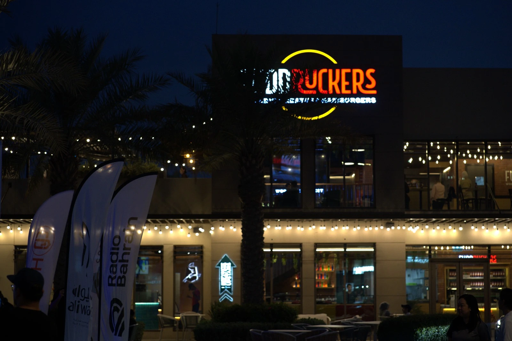
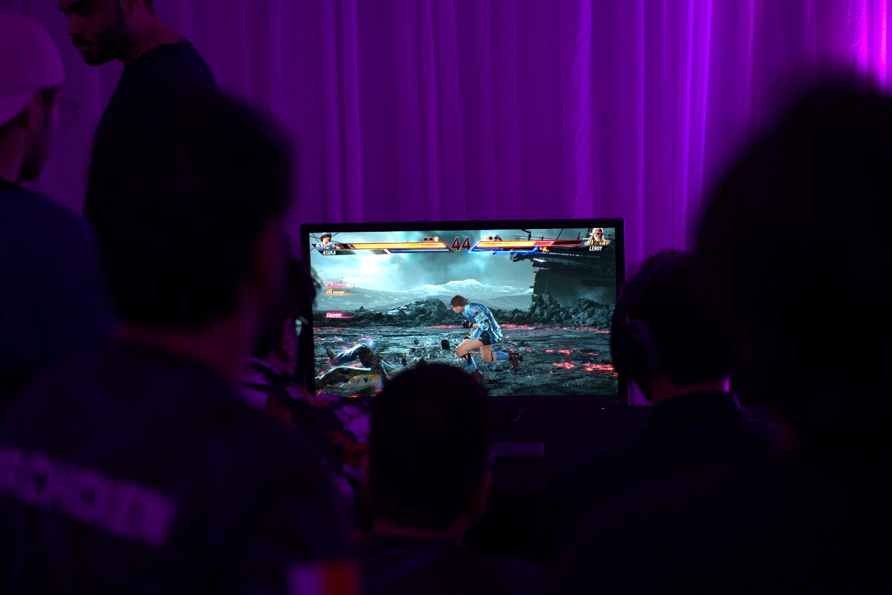
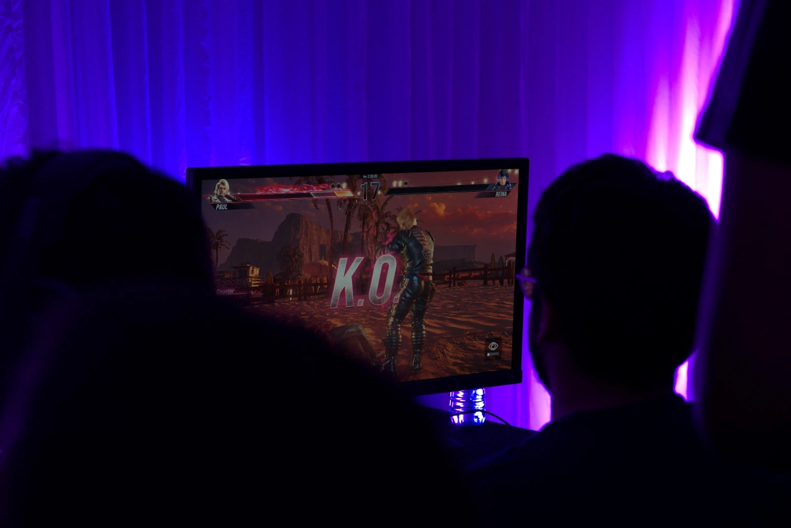

The Fudruckers Esports Championship 2025 brought together the best gaming talent in Bahrain for an exciting day of competitive play! This unique event combined the thrill of esports competition with the comfort and atmosphere of one of Bahrain's favorite dining destinations, creating an unforgettable experience for participants and spectators alike.
Tournament Overview
This championship represented a perfect blend of competitive gaming and social entertainment. Players competed in various popular titles while enjoying the welcoming atmosphere of Fudruckers, making this event accessible to both hardcore gamers and casual enthusiasts.
Format: Multiple Game Titles
Type: In-Person Championship
Features: Gaming, Food, Entertainment
Event Features
Event Highlights
The Fudruckers Esports Championship featured an exciting lineup of activities designed to appeal to gamers of all skill levels. From competitive tournaments to casual gaming sessions, there was something for everyone to enjoy.
- Multiple game tournaments
- Casual gaming zones
- Food and refreshments
- Prize giveaways
- Community networking
- Live entertainment
BEC's Role & Responsibilities
BEC coordinated with Fudruckers and Dallah Promotions to ensure the gaming aspects of the championship were executed flawlessly. Our expertise in tournament organization and community engagement helped create an exceptional experience for all participants.
- Tournament organization and setup
- Technical support and equipment
- Community engagement and promotion
- Prize coordination and distribution
- Social media coverage
Event Gallery
Take a look at some of the exciting moments and activities that were featured at the Fudruckers Esports Championship 2025. These images showcase the vibrant atmosphere and diverse range of activities that attendees experienced.




Impact & Future
The Fudruckers Esports Championship represented an innovative approach to bringing gaming culture into everyday social spaces. This event helped normalize gaming as a social activity while providing a platform for local talent to showcase their skills.
The success of this partnership opened doors for future collaborations between gaming organizations and local businesses, creating more opportunities for the community to come together and celebrate their shared passion for gaming.